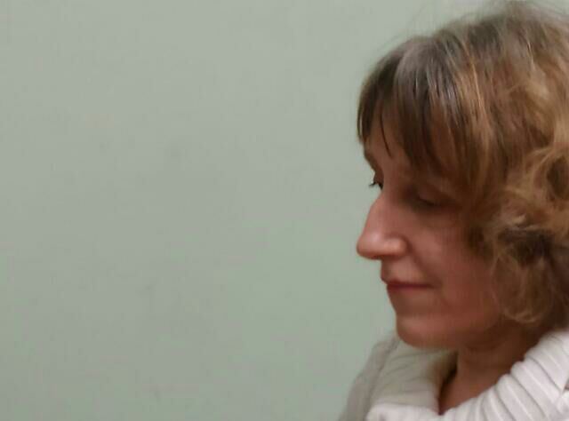
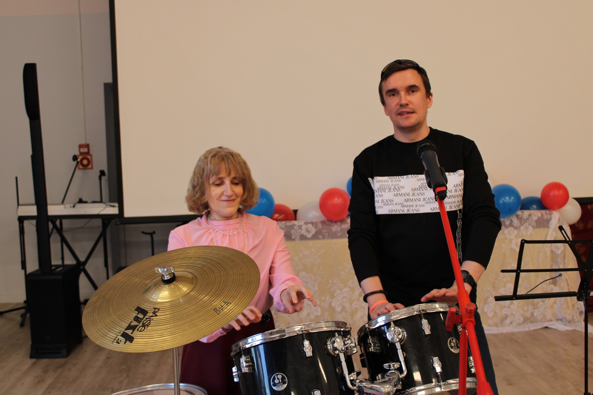
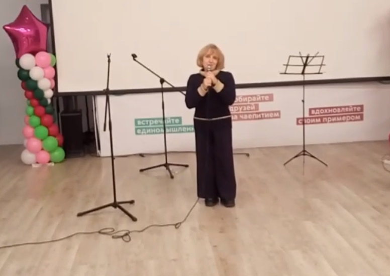
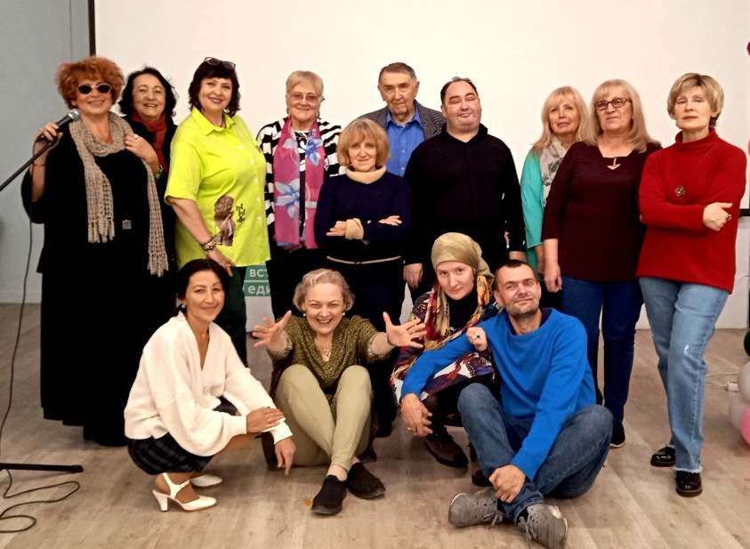
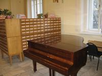

Наталия Викторовна Остроумова




Образование
- Музыкальный колледж имени Гнесиных
- Российская академия музыки имени Гнесиных
- Аспирантура Московской консерватории
Работа
 Научная музыкальная библиотека имени С.И. Танеева была открыта в Москве в 1909 году. В наши дни библиотека Московской консерватории является:- одним из старейших и крупнейшим музыкальным фондом страны, имеющим историческое значение;
- научной музыкальной библиотекой, которая комплектует свои фонды, предоставляя возможность пользоваться ими в учебных, научных и творческих целях и хранит их для будущих поколений;
- информационным и библиографическим центром страны по музыке, обрабатывающим текущие и ретроспективные документы в области музыкального искусства и предоставляющим информационные ресурсы пользователям как в стране, так и за рубежом;
- центром, осуществляющим справочно-информационное обслуживание (предоставляющим справки различного содержания, характера и назначения: библиографические, тематические, фактографические);
- учреждением, осуществляющим научно-методическое руководство библиотеками учебных музыкальных заведений страны, а также оказывающим им методическую и консультативную помощь;
- библиотекой - участницей научно-исследовательской, информационной и других видов деятельности по вопросам музыкального библиотековедения, библиографоведения и информатизации совместно с российскими и зарубежными библиотеками и центрами.
Достижения
Защитила кандидатскую диссертацию. Являюсь автором книг и статей по музыковедению.Увлечения
 Учусь вокалу, играю на фортепиано, занимаюсь в театральной студии, играю в теннис и биллиард.
Учусь вокалу, играю на фортепиано, занимаюсь в театральной студии, играю в теннис и биллиард.